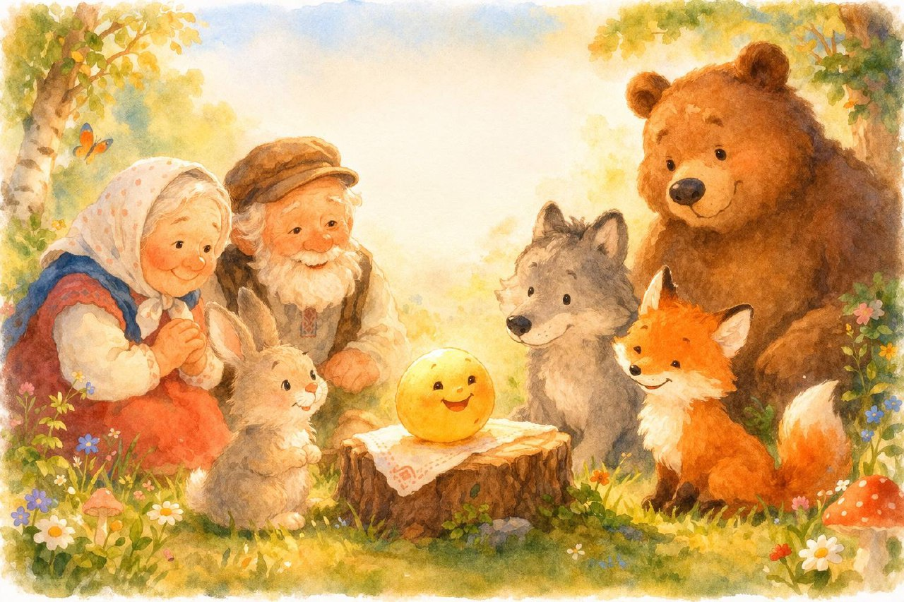
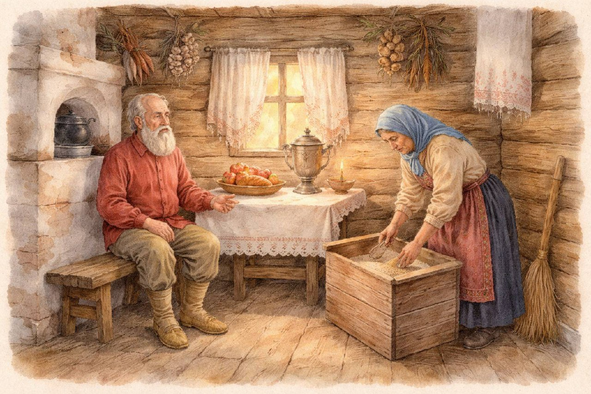
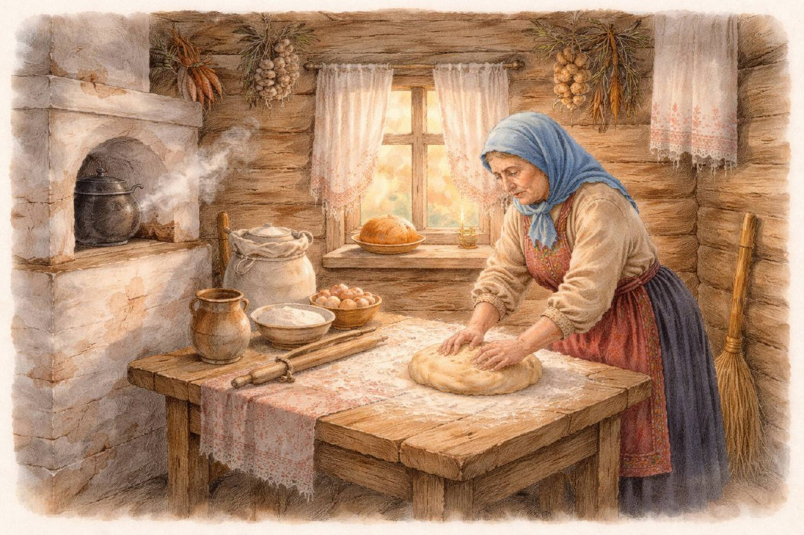
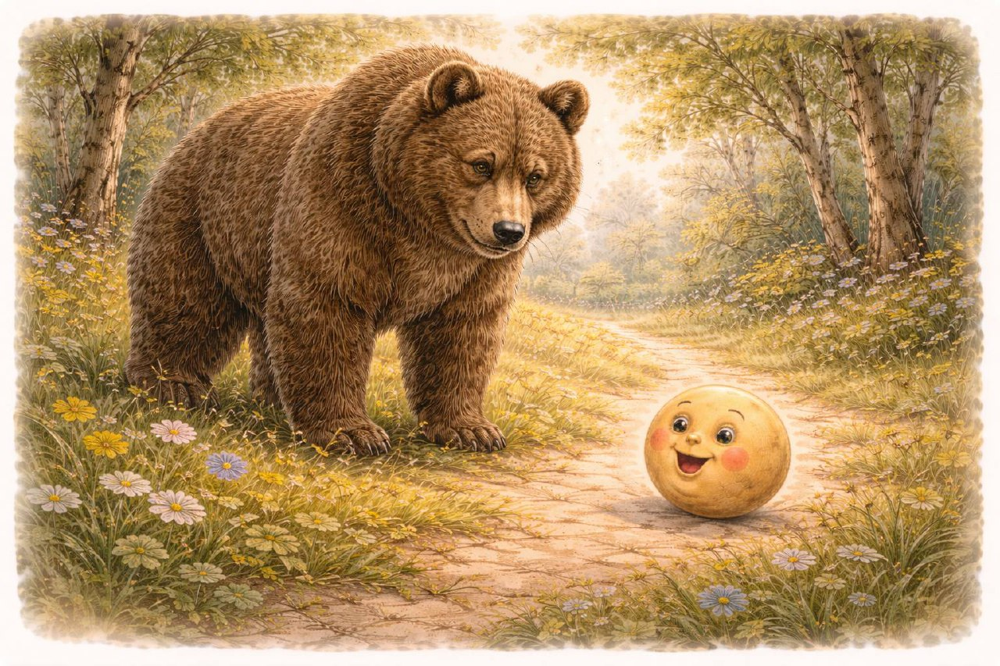
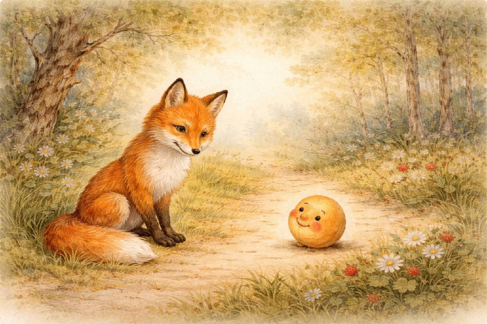
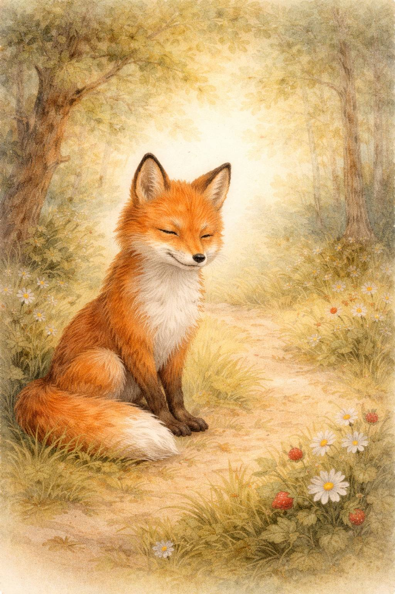

Колобок Русская народная сказка

Жили-были старик со старухой. Однажды говорит старик: — Испеки, старуха, колобок. — Из чего испечь-то? Муки нет. — Эх, старуха! По коробу поскреби, по сусеку помети — авось муки и наберётся.

Старуха по коробу поскребла, по сусеку помела — и набралось муки две пригоршни. Замесила она тесто на сметане, пожарила в масле и положила колобок на окошечко остудить.

Колобок полежал-полежал да вдруг и покатился — с окна на лавку, с лавки на пол, по полу — к дверям, через порог — в сени, из сеней — на крыльцо, с крыльца — на двор, со двора — за ворота, дальше и дальше.

Катится колобок по дороге, а навстречу ему заяц. — Колобок, колобок! Я тебя съем! — Не ешь меня, косой зайчик! Я тебе песенку спою!

Я по коробу скребён, по сусеку метён, на сметане мешон, да в масле пряжон, на окошке стужон. Я от дедушки ушёл, я от бабушки ушёл, от тебя, зайца, не хитро уйти!

Катится колобок, а навстречу ему волк. — Колобок, колобок! Я тебя съем! — Не ешь меня, серый волк! Я тебе песенку спою!

Я по коробу скребён… Я от дедушки ушёл, я от бабушки ушёл, я от зайца ушёл, от тебя, волка, не хитро уйти!

Катится колобок, а навстречу ему медведь. — Колобок, колобок! Я тебя съем. — Где тебе, косолапому, съесть меня!

Я по коробу скребён… Я от дедушки ушёл, я от бабушки ушёл, я от зайца ушёл, я от волка ушёл, от тебя, медведь, не хитро уйти!

Катится колобок, а навстречу ему лиса. — Здравствуй, колобок! Какой ты хорошенький!

— Какая славная песенка! Только я, колобок, плохо слышу… Сядь-ка на мою мордочку да пропой ещё разок.

Колобок прыгнул лисе на язык и запел песенку. А лиса — ам его! — и скушала.
